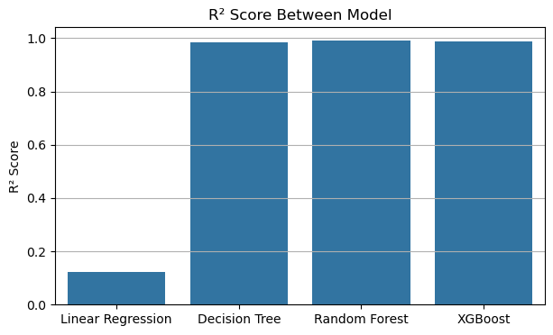
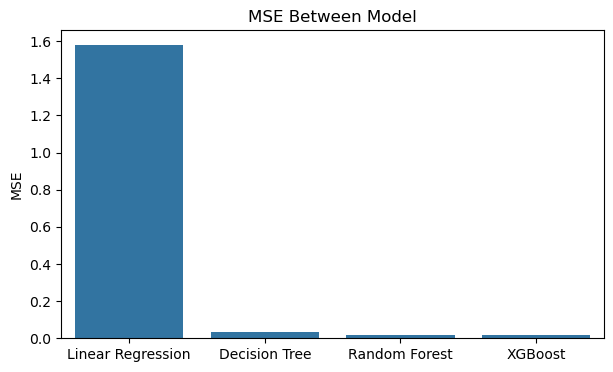

Analisis ini menggunakan Walmart Dataset (2010-2012) yang berisi data penjualan mingguan toko, suhu, harga bahan bakar, CPI, libur, dan tingkat pengangguran (Unemployment).
Target prediksi: Unemployment.
Metrik R² Score

Gambar 1: Hasil R² Metrik dengan menggunakan 4 Model
Grafik ini membandingkan performa 4 model regresi berdasarkan metrik R² score. Model yang dibandingkan, yaitu: Linear Regression, Decision Tree, Random Forest, dan XGBoost. Kegunaan R² Score untuk mengukur seberapa baik model menjelaskan variansi data, jika nilai R² = 1, berarti model sangat baik.
Linear Regression memiliki nilai yang rendah, diartikan bahwa Linear Regression gagal menangkap pola data. Sedangkan, Decision Tree, Random Forest, dan XGBoost hampir mendekati 1, berarti model ini sangat baik untuk digunakan.
Namun, Random Forest dan XGBoost memiliki performa lebih baik dan mendekati sempurna dengan nilai 0,99.
Metrik MSE

Gambar 2: Hasil Metrik MSE dengan menggunakan 4 model
Grafik ini membandingkan keempat model berdasarkan Mean Squared Error (MSE). MSE mengukur rata-rata kuadrat error prediksim semakin kecil MSE, maka semakin baik model tersebut.
Pada Linear Regression MSE memiliki nilai yang tinggi sebesar 1,58 yang artinya memiliki prediksi meleset jauh. Selain itu, pada Decision Tree, Random Forest, dan XGBoost memiliki nilai yang kecil atau mendekati 0, artinya prediksi mereka bagus atau akurat.
Kesimpulan
Linear Regression digunakan sebagai baseline namun tidak mampu menangkap pola non-linear dalam data. XGBoost, Random Forest, dan Decision Tree menunjukkan performa lebih baik dengan MSE rendah dan R² mendekati 99%.
Meskipun Decision Tree cukup baik, model ini lebih rentan overfitting. Secara keseluruhan, XGBoost dan Random Forest menjadi model paling direkomendasikan untuk memprediksi tingkat pengangguran berdasarkan data ekonomi Walmart.